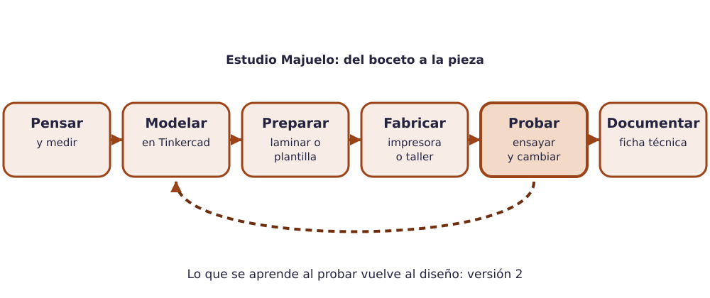

Contenido
Bienvenida al taller del Estudio Majuelo
En esta unidad el estudio deja el papel y pasa a la fabricación. Vais a diseñar en 3D una pieza útil para el instituto —un soporte, un adaptador, un organizador, una señal táctil…—, la vais a imprimir en las impresoras 3D del taller, la vais a rematar a mano y la vais a documentar con una ficha técnica abierta, para que cualquiera pueda fabricarla, mejorarla o adaptarla.

El reto
En equipos de tres o cuatro personas elegiréis una pieza del catálogo de piezas del centro (hay tres niveles de dificultad) y la llevaréis desde el boceto hasta el objeto real: modelo 3D, preparación para la impresora, impresión, acabado en el taller, pruebas y ficha técnica. Antes, cada persona aprende a manejar el CAD con tres retos individuales.
Qué entregarás
- Retos CAD 3D. Tres piezas modeladas en TinkerCAD con medidas exactas. Tarea de
Moodle Retos CAD 3D: archivos
reto1.stl,reto2.stlyreto3.stl, más el enlace a cada diseño. - Prueba corta CAD. Una pieza pequeña modelada en clase, a partir de un plano, en un tiempo limitado. La calificación aparece en la tarea de Moodle Prueba corta CAD (no se sube nada desde casa).
- Pieza final. El modelo 3D de la pieza del catálogo y una foto de la pieza ya fabricada
y acabada. Tarea Pieza final (modelo 3D + foto):
pieza_final.stl,pieza_final.jpgy, en el texto de la entrega, el enlace al diseño y qué se probó, qué falló y qué se cambió. - Ficha técnica abierta. Plano acotado, materiales, proceso de fabricación, ciclo de vida
y licencia Creative Commons de la pieza. Tarea Ficha técnica abierta, archivo
ficha_tecnica.pdf. - Práctica de fabricación. Se observa en el taller con una lista de cotejo: preparación de la impresión, uso seguro de las herramientas, acabado y orden. La calificación aparece en la tarea de Moodle Práctica de fabricación (sin subir archivo).
Nombres de archivo
Usa exactamente los nombres indicados, sin añadir tu nombre ni apellidos: Moodle ya sabe quién entrega cada archivo. Lo mismo con los diseños en TinkerCAD: se llaman como la pieza, no como tú.
Cómo se trabaja en el taller
Los equipos son nuevos en esta unidad. Cada equipo reparte cuatro roles que rotan cada pocas sesiones:
| Rol | Se encarga de… |
|---|---|
| Diseño | Que el modelo 3D esté completo, con medidas comprobadas y exportado a STL. |
| Fabricación | Laminar la pieza, pedir turno de impresora y coordinar el acabado en el taller. |
| Documentación | Fotos del proceso, carpeta compartida al día, ficha técnica. |
| Seguridad y material | Que se cumplan las normas del taller, que el puesto quede limpio y que no falte material. |
Herramientas que vas a usar
| Herramienta | Para qué | Cómo se accede |
|---|---|---|
| TinkerCAD | Modelar en 3D y exportar STL. | En el navegador, tinkercad.com. No se instala nada. |
| Kiri:Moto | Laminar el STL: convertirlo en capas para la impresora. | En el navegador, grid.space/kiri. Sin cuenta, sin instalar. |
| Drive (cuenta educativa) | Carpeta compartida del equipo: STL, fotos, laminados y ficha. | Con la cuenta educativa. |
| Impresoras 3D del taller | Fabricar la pieza en PLA. | Solo con turno y con supervisión. |
| Herramientas manuales | Acabado: lijar, cortar, taladrar, unir. | En el taller, con las normas de la ficha de seguridad. |
Cómo trabajar con la plantilla
Crea la copia de trabajo del equipo
- Crear una copia de la ficha técnica (una por equipo)
- Abre el enlace y confirma que quieres hacer una copia. Se guarda en tu Drive.
- Compártela solo con las personas del equipo y guárdala en la carpeta compartida.
- Se rellena por apartados a lo largo de la unidad; no se entrega hasta que la pieza está fabricada.
- Para entregar: Archivo → Descargar → Documento PDF y sube ese PDF a la tarea de Moodle.
Mapa de la unidad
- CAD 3D y espacio compartido
- Retos CAD
- Diseño para fabricación
- Impresión 3D y corte
- Taller: técnicas manuales y seguridad
- Material y sostenibilidad de la pieza
- La pieza final
- Ficha técnica abierta
Material de apoyo: chuleta de cad y fabricación · ficha de seguridad del taller.